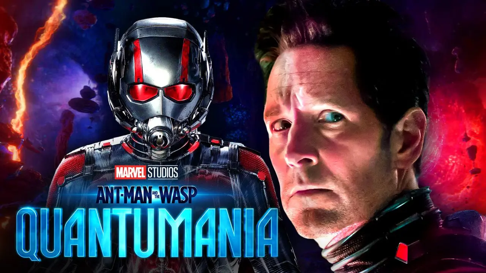
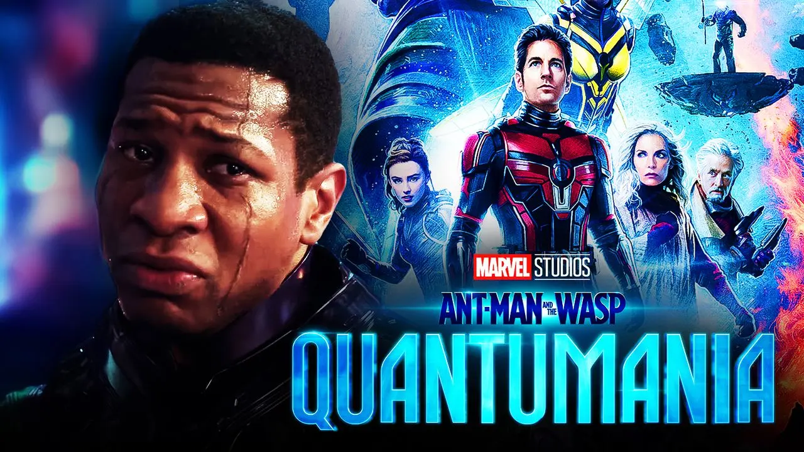
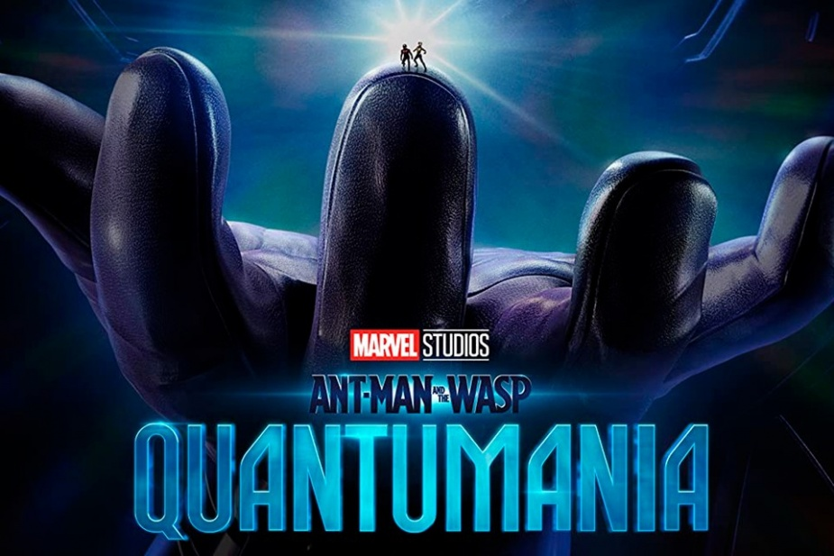
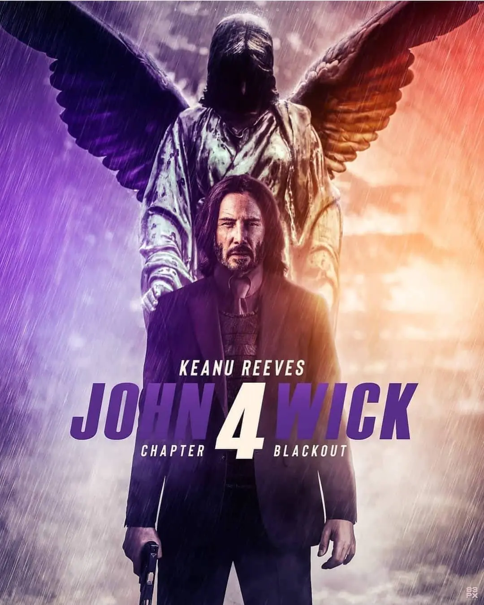
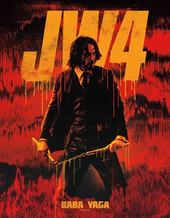
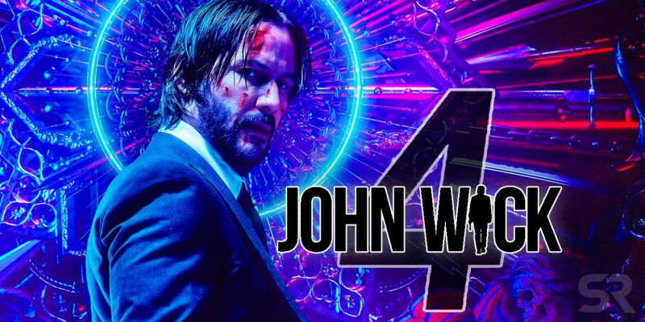

Jedym z najbardziej oczekiwanych rozwinięć trylogii Marvela jest Ant-Man i Osa: Kwantomania
Kolejnym krwawym filmej jest John Wick 4
     
John Wick
1. Keanu Reeves sam wykonał około 90% wyczynów kaskaderskich.
2.Dziadek Dereka Kolstad, 88-letni John Wick, posłużył jako inspiracja dla tytułu filmu i imienia postaci.
3.Pierwotnie postac Johna Wicka miała mieć około 60 lat.
Ant-Man
1.Początkowo film miał skupić się na oryginalnym Ant-Manie - Hanku Pymie. Jednak producenci zdecydowali, że ta postać nie jest przyjazna rodzinie, bo w jednej z jego komiksowych wersji wykorzystywał swoją dziewczynę. Skupiono się więc na Scotcie Langu, a Pym stał się jego mentorem i postacią drugoplanową.
2.W scenach retrospekcji z lat 80. zastosowano odmładzające efekty wizualne na 70-letnim Michaelu Douglasie i 57-letnim Martinie Donovanie, aby wyglądali młodziej. Z kolei postarzające efekty wizualne połączone z peruką i makijażem użyto na 33-letniej Hayley Atwell, która grała Peggy Carter.